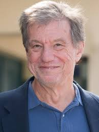
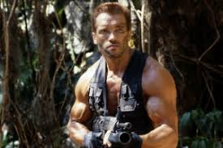
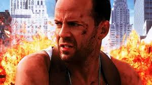

John Mctiernan

Après les années 70 et le Nouvel Hollywood qui fut caractérisé par des questions idéologiques et
existentielles, dues au contexte de la guerre
du Vietnam et au Watergate, les années 80 voient le retour d\'un cinéma plus de divertissement
et notemment du héros.
En 1985, un film à petit budget, Nomads, se fait remarquer malgré son manque de succès et permet
à son réalisateur et scénariste de se retrouver à la tête d\'une grosse
production, Predator. C\'est ainsi que John Mctiernan va se faire un nom et devenir un des
réalisateurs les plus novateurs et influents
de ces trentes dernières années.
De Predator à Die Hard With a vengeance, le code du héros revu et
corrigé

Dès le début de sa carrière, John Mctiernan prend le cinéma comme jeu. Très souvent, un film de
McTiernan semble procéder d’un pari astucieux et ludique : mélanger film de guerre et monstre de
science-fiction,
enfermer son personnage dans une tour de Los Angeles, imaginer des poursuites de sous-marins. Le
jeu est même le sujet de Die Hard With a vengeance , où le héros du film est
soumis à une série d’épreuves par le « méchant » dans un temps compté.
Le braquage d’œuvres d’art devient un passe-temps de riche dilettante (Thomas Crown). Basic
imagine une habile combinatoire narrative où les événements montrés varient en fonction des
bifurcations possibles du récit.
Le cinéma semble être pour le réalisateur un terrain d’expérimentation au centre duquel il peut
ainsi appliquer toute sorte de trouvailles à la fois esthétiques et techniques, sans arrêt
obsédé par l’idée de faire de la caméra elle-même « un narrateur, une voix active, presque un
commentaire de l’action en train de se faire ».
Si tout désormais se doit d’être bouclé, dans un cinéma américain qui rejette le doute,
l’incertitude et les contradictions non résolues, McTiernan déplace le centre névralgique du
divertissement dans la figuration de nouveaux types de corps, dans l’invention d’une silhouette
humaine postmoderne, à la fois fragile et irréelle.
